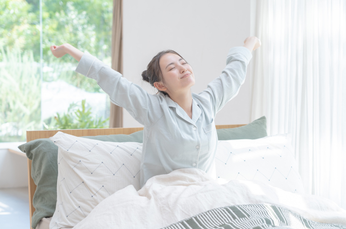

Pola hidup sehat dapat diterapkan melalui kebiasaan sederhana yang dilakukan setiap hari. Meskipun terlihat kecil, kebiasaan tersebut dapat memberikan dampak besar bagi kesehatan jika dilakukan secara konsisten.
Salah satu contoh penerapan pola hidup sehat adalah memulai hari dengan bangun pagi tepat waktu dan melakukan aktivitas ringan seperti peregangan atau olahraga ringan. Setelah itu, sarapan dengan makanan yang bergizi sangat penting untuk memberikan energi sebelum melakukan aktivitas seperti belajar di sekolah.
Selama berada di sekolah, pelajar dapat menerapkan pola hidup sehat dengan membawa bekal makanan yang sehat, minum air putih yang cukup, serta tetap aktif bergerak. Mengurangi konsumsi makanan cepat saji juga merupakan bagian dari penerapan pola hidup sehat.
Pada sore hari, seseorang dapat melakukan olahraga seperti bersepeda, jogging, atau bermain olahraga bersama teman. Aktivitas fisik ini tidak hanya baik untuk kesehatan tubuh, tetapi juga dapat membantu mengurangi stres.
Pada malam hari, penerapan pola hidup sehat dapat dilakukan dengan makan malam secukupnya, belajar dengan teratur, serta tidur tepat waktu. Mengurangi penggunaan gadget sebelum tidur juga sangat dianjurkan karena dapat membantu meningkatkan kualitas tidur.
Jika kebiasaan-kebiasaan ini dilakukan setiap hari, maka tubuh akan menjadi lebih sehat, pikiran lebih fokus, dan aktivitas sehari-hari dapat dilakukan dengan lebih optimal.
